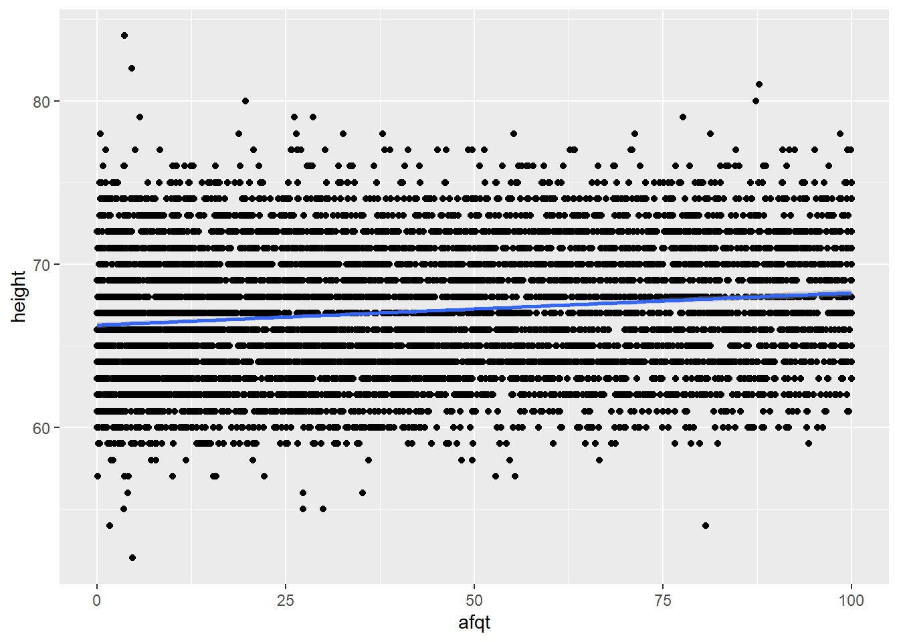

hoyde <- modelr::heights
hoyde <- hoyde |>
mutate(
bmi = weight * 0.4536/(height * 2.54/100)^2,
married = fct_collapse(
.f = marital,
married = "married",
other_level = "not married"
),
edu_fac = cut(
x = education,
breaks = c(0, 12, 14, 16, 21),
labels = c("not_hs", "not_cc", "not_col", "col_plus"),
right = FALSE
)
) |>
select(income:age, education:bmi, everything()) |>
select(-education, -marital)
hoydeZeroInc <- hoyde |>
filter(income == 0)
hoydeNormInc <- hoyde |>
filter(income > 0 & income < 343830)
hoydeHighInc <- hoyde |>
filter(income == 343830)sec_ass
Innledning
I denne oppgaven skal vi se på to ulike sammenhenger. Sammenhengen mellom evnenivå og inntekt, og sammenhengen mellom ansiennitet og inntekt.
Vi bruker datasettet heights og deler datasettet opp i tre ulike fordelt på inntektsnivået. Det første settet er for de med ingen inntekt. Det andre settet er for normal inntekt der selve inntekten er mellom 0 og 343 830 amerikanske dollar. Det siste settet er for de med inntekt fra 343 830 amerikanske doller og oppover.
Når vi sammeligner evnenivå og inntekt, bruker vi variabelen afqt. Dette er en måleenhet som det amerikanske militæret bruker til å måle evnenivå. “What Do ASVAB Scores Mean | ASVAB Career Exploration Program” (n.d.)
Litteraturgjennomgang
Tidligere forskning viser at det er en sammenheng mellom inntekt og evnenivå. det er påvis at for hvert ekstra IQ poeng, kan inntekten øke fra $234 til $616 per år Zagorsky (2007a)
.
Sammenheng mellom inntekt og evnenivå
#sammenheng mellom afqt og inntekt i hoydeNormInc
hoydeNormInc |>
ggplot(mapping = aes(x = afqt, y = income)) +
geom_point() +
geom_smooth()`geom_smooth()` using method = 'gam' and formula = 'y ~ s(x, bs = "cs")'Warning: Removed 184 rows containing non-finite values (`stat_smooth()`).Warning: Removed 184 rows containing missing values (`geom_point()`).
I overstående plott ser vi en sammenheng mellom evnenivå og inntekt i datasettet hoydeNormInc. Vi ser en stigning i den linjære linjen, noe som tilsier at økt envenivå gir høyere inntekt.
#afqt i hoydeZeroInc og hoydeHighInc
ggplot(
data = hoydeZeroInc
)+
geom_histogram(
mapping = aes(x = afqt, y = after_stat(density)),
alpha = 0.3,
colour = "blue",
fill = "blue"
)+
geom_histogram(
data = hoydeHighInc,
mapping = aes(x = afqt, y = after_stat(density)),
alpha = 0.5,
colour = "red",
fill = "red"
)`stat_bin()` using `bins = 30`. Pick better value with `binwidth`.Warning: Removed 78 rows containing non-finite values (`stat_bin()`).`stat_bin()` using `bins = 30`. Pick better value with `binwidth`.
I dette histogrammet ser vi på sammenhengen mellom evnenivået i to ulike datasett. Datasettene som er brukt er hoydeZeroInc og hoydeHightInc. Her ser vi at det er en klar differane i evnenivået i de ulike datasettene. Datasettet med høy inntekt har helt klart hørere grad av envenivå sammenlignet med datasettet med ingen inntekt.
#sammenheng mellom afqt og inntekt, facet mht. kjønn
my_hoyde <- data.frame(afqt = hoyde$afqt,income = hoyde$income, sex = hoyde$sex)
ggplot(data = hoyde,
mapping = aes(x = afqt, y = income)
) +
geom_point(data = my_hoyde,
mapping = aes(x = afqt, y = income)) +
geom_smooth(method = lm) +
facet_wrap(~ sex)`geom_smooth()` using formula = 'y ~ x'Warning: Removed 262 rows containing non-finite values (`stat_smooth()`).Warning: Removed 262 rows containing missing values (`geom_point()`).
#sammenheng mellom edu_fac/education og afqt
ggplot(
data = hoyde,
mapping = aes(
x = edu_fac,
y = afqt
)
) +
geom_point()+
geom_boxplot()Warning: Removed 262 rows containing non-finite values (`stat_boxplot()`).Warning: Removed 262 rows containing missing values (`geom_point()`).
#sammenheng mellom høyde og afqt
hoyde |>
select(afqt, height) |>
ggplot(mapping = aes(x = afqt, y = height)) +
geom_point() +
geom_smooth()`geom_smooth()` using method = 'gam' and formula = 'y ~ s(x, bs = "cs")'Warning: Removed 262 rows containing non-finite values (`stat_smooth()`).Warning: Removed 262 rows containing missing values (`geom_point()`).
I dette plottet har vi sammenlighet evnenivå og høyde. Vi kan se her at liten stigning i den linjære linjen. Dette kan muligens forklares ved hjelp av det neste histogrammet. I histogrammet sammenligner vi evnenivå på kvinner og menn. Her ser vi at det er flest menn på høyt evnenivå. Menn er også gjennomsnittlig høyere enn kvinner.
# sammenligner afqt kvinner og menn på hele datasettet (ekstra)
hoyde |>
ggplot() +
geom_histogram(
data = filter(hoyde, sex == "male"),
mapping = aes(x = afqt, y = after_stat(density)),
alpha = 0.3,
colour = "blue",
fill = "blue"
) +
geom_histogram(
data = filter(hoyde, sex == "female"),
mapping = aes(x = afqt, y = after_stat(density)),
alpha = 0.5,
colour = "red",
fill = "red"
)`stat_bin()` using `bins = 30`. Pick better value with `binwidth`.Warning: Removed 154 rows containing non-finite values (`stat_bin()`).`stat_bin()` using `bins = 30`. Pick better value with `binwidth`.Warning: Removed 108 rows containing non-finite values (`stat_bin()`).
Sammenheng mellom ansiennitet og inntekt
Konklusjon
Referanser
Bound, John, Zvi Griliches, and Bronwyn H. Hall. 1984. “Brothers and Sisters in the Family and the Labor Market.” Working {{Paper}}. Working Paper Series. National Bureau of Economic Research.
“What Do ASVAB Scores Mean | ASVAB Career Exploration Program.” n.d. https://www.asvabprogram.com/media-center-article/103. Accessed October 22, 2023.
Zagorsky, Jay L. 2007a. “Do You Have to Be Smart to Be Rich? The Impact of IQ on Wealth, Income and Financial Distress.” Intelligence 35 (5): 489–501.
———. 2007b. “Do You Have to Be Smart to Be Rich? The Impact of IQ on Wealth, Income and Financial Distress.” Intelligence 35 (5): 489–501.